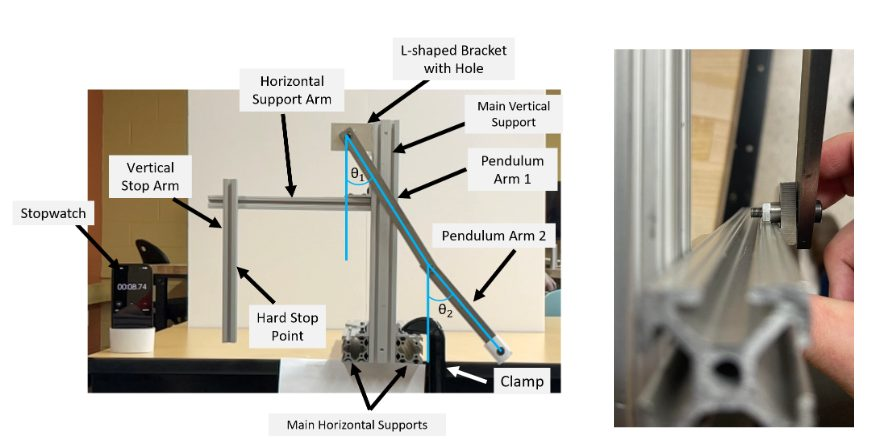
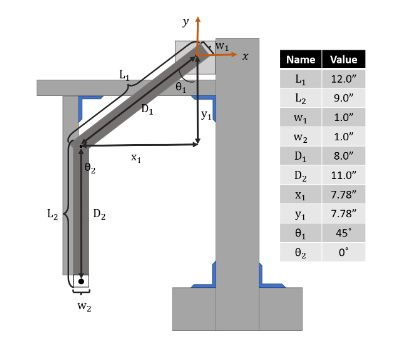

Double Pendulum Experiment
Theoretical model vs. physical rig — under 10% error for the first two seconds.
Build a theoretical model of a chaotic system. Build the physical thing. Release them from the same starting condition. See where they disagree, then figure out what your simulation is missing.

The system
The pendulum is two solid arms connected with bearings and shoulder bolts. The bottom arm hangs free. The top arm starts at 45° from vertical against a hard stopper, then is released. The whole motion gets captured at 120 fps so we can recover the angles frame-by-frame later. Goal: under 10% error for the first two seconds.
Tracking the motion
Coloured dots get tracked in Kinovea — one per arm. We then compute the angle of each arm from the dot positions, and feed the angles into MATLAB.

Comparison
MATLAB gets the measured angles, interpolated onto the simulation timeline. Then a Mean Squared Error per angle, and a visual overlay of measured-vs-simulated. If the measured trace falls outside the simulation's error band, the simulation gets reviewed.

What you learn
The model and the rig agree for about a second and a half. Then they don't, and they don't keep agreeing — chaotic systems are like that. The point isn't that the model is broken; it's that you can quantify how much you don't know about the friction in the bearings and the imperfection of the initial release, by reading the disagreement.